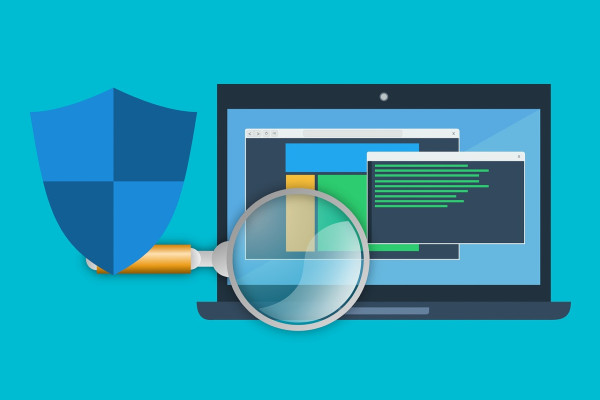

Os Melhores Antivírus de 2024
1. Norton Security Deluxe
O Norton Security Deluxe continua sendo uma escolha popular em 2024, oferecendo uma ampla gama de recursos de segurança, incluindo proteção contra vírus, spyware, ransomware e phishing. Sua interface intuitiva e atualizações regulares garantem uma proteção contínua contra as ameaças mais recentes.
2. Bitdefender Total Security
O Bitdefender Total Security é outra opção sólida, conhecida por sua excelente detecção de malware e desempenho leve. Além da proteção contra ameaças online, oferece recursos extras como firewall, controle parental e proteção de identidade.
3. Kaspersky Internet Security
O Kaspersky Internet Security é reconhecido por sua capacidade de detectar e neutralizar ameaças avançadas, incluindo ransomware e exploits de dia zero. Sua interface fácil de usar e baixo impacto no desempenho do sistema o tornam uma escolha popular entre os usuários.
4. McAfee Total Protection
O McAfee Total Protection oferece uma ampla gama de recursos de segurança, incluindo proteção contra malware, firewall, proteção de identidade e controle parental. Sua interface simplificada e suporte abrangente tornam-no uma escolha sólida para usuários domésticos e empresariais.
5. Avast Free Antivirus
Para aqueles que procuram uma opção gratuita, o Avast Free Antivirus continua sendo uma escolha popular. Apesar de ser gratuito, oferece uma proteção eficaz contra vírus, malware e outras ameaças online, juntamente com recursos adicionais como proteção de Wi-Fi e análise de rede doméstica.
Conclusão:
A escolha do antivírus certo é crucial para garantir a segurança de seus dispositivos e dados contra ameaças cibernéticas. Ao considerar os melhores antivírus de 2024 apresentados neste artigo, certifique-se de avaliar suas necessidades específicas e escolher uma solução que ofereça a melhor proteção para você.